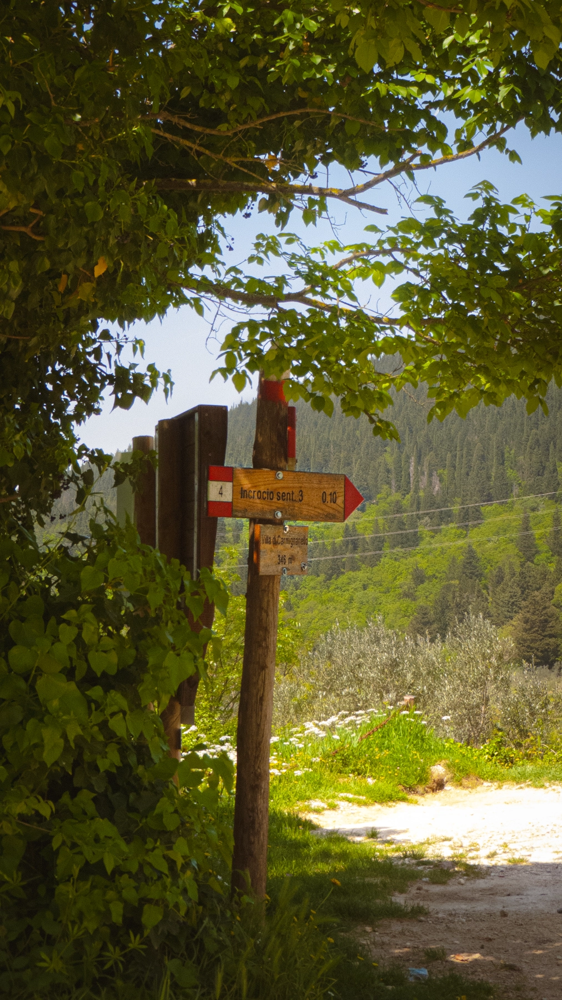

01 — About
La fotografia
La fotografia
come linguaggio
Ho iniziato a fotografare un paio di anni fa, quasi per caso, portando con me la vecchia fotocamera digitale di mio padre durante le uscite con gli amici o in occasione di eventi particolari. Col tempo la curiosità è cresciuta e ho avuto modo di sperimentare anche una fotocamera a rullino Minolta, sempre sua, scoprendo un modo completamente diverso di approcciare lo scatto. Tutte le foto esposte in questo sito sono state realizzate con la digitale. Quello che è nato come un passatempo si è trasformato in una passione vera, e spero che un giorno possa diventare anche un'opportunità di lavoro.

